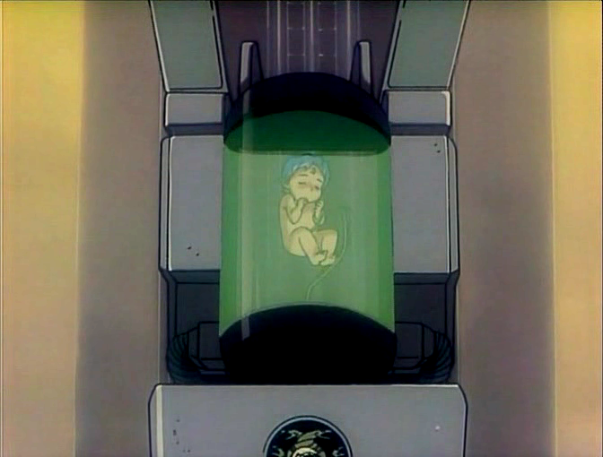
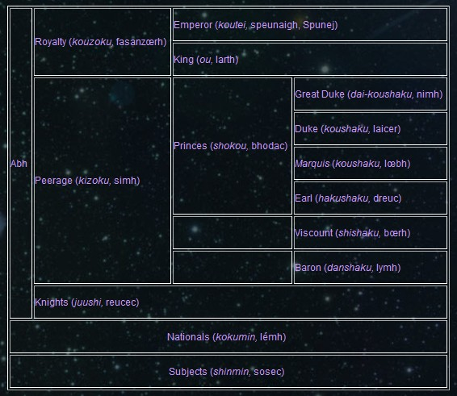
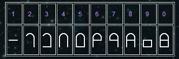

Gestation Machines.

In the early years our space ships lacked gravitational controls. This made natural child birth very dangerous. The gestation machine was the solution to the problem. After conception and genetic manipulation the embryo was placed in one of these gestation machines. Protected from gravitational forces and radiation the child matured until the time of emergence (Birth). This chamber is just starting the emergence sequence.
There were rare occasions where some women decided to carry the child to term within their body. When my time comes that will be a decision I’ll make.
For those of you who are curious that is me in the machine.
Abh – Culture and Traditions
The space metropolis where the Abh’s originated from was created to keep and reconstruct the culture of a certain land on Earth. In Crest of the Stars, this land is referred to as “islands in East Asia” and strongly implied that it is far-future Japan. Due to their feelings of collective guilt, the Abh founding fathers vowed to base their new culture on this “unadulterated” Japanese culture; however, just like any living culture, it eventually changed, developed, and evolved as it is being transmitted from generation to generation. Nonetheless, even if they do not openly discuss it or write it down, the Abh’s do not deny the history of their “Volk” and “Kultur”, transmitting it instead as oral history. The other independent states also know of their origin, but they use (and distort) this information to spread anti-Abh propaganda. Baronh (the Abh language) itself developed from the Japanese used by these ultra nationalists-an artificial form of Japanese devoid of all foreign (such as Chinese, Indic, and European) words.
Abh culture is a very distinct one. The Abh are badly misunderstood by not only their enemies but also by their subjects. This is mainly because they are not keen on explaining about their way of life to others. The fact that most of the basic education is done at home, not at school, also contributes to this.
Legally the Abh are defined as “the royalty, peerage and knights”. Thus anyone who has become one of these is called an Abh. But the word Abh has another meaning; the name of a biological species distinct from Homo sapiens. It is the latter meaning that non-Abh people usually think of. These two definitions of “Abh” are identical in most cases but there are occasional exceptions like Jinto. That is, when a lander becomes a legal Abh (e.g., through enlistment to and promotion in the Star Forces), he or she will remain Homo sapiens although any children must become an Abh biologically through the genetic manipulation.
The Abh have no concept of marriage; however that does not mean that they do not have families. They love each other but don’t marry; though a couple may live together for a short period of time or even remain together “Till death us do part.” The basic Abh family is a single-parent household, though some Abh like to live with their relatives.
The Abh’s gestate most often through the use of gestation machines, though, contrary to the belief of most non-Abh, they do often conceive “naturally” (i.e., through coitus) the rest are “test tube babies”. Those who conceive naturally most often remove the zygote or embryo from their own wombs to have it transferred to gestation machine, though some more eccentric women would, after a having the embryo genetically examined and modified to ensure its biological integrity as an Abh along with the maintenance of clan traits, have these zygotes or embryos replaced into their own wombs in order to carry it to full term naturally.
Abh’s sometimes ask sperm or egg donations from close relatives or even strangers, or the genetic material of people of their own gender or even clone themselves to reproduce. However, most Abh’s have children out of heterosexual relationships with people whom they have fallen in love. The offspring of such a relationship is called a “son/daughter of love.”
The Abh think it’s important to have and maintain unique clan or familial genetic/physical traits and traditions. As for genetical traits, a clan share physical feature (üaritec) unique to themselves. For example, the Ablïarsec , the imperial house has elfish ears called Nuic Ablïarsec (Ears of Ablïarsec). Each clan has its own unique feature and other clans cannot share it. In regard to clan traditions, it is important that a clan preserves and maintains the uniqueness and the practice of these traditions. It is indeed deemed a grave social offence for one to publicly insult the traditions of other clans. It is for this reason that the Abh’s take long “parenting” leaves to raise their children not only to personally supervise the primary education of their own children but also to ensure that their traditions are passed on to their offspring.
The Abh are sometimes described as the “Art of Genetic Manipulation” as all of them are beautiful. This is, however, never a source of pride for them. They care more what they do rather than how they look as the latter is a work of their parent, not themselves. Their life expectancy is also longer. They may live more than two hundred years but do not become old in appearance. They grow up similar to humans until they are about fifteen or so and then spend the next twenty-five years aging about ten years in appearance. This is the end of their outer growth and, thus, a two hundred year-old Abh still looks like twenty-five year-old. The Abh call the period before age fifteen “growth” (zarhoth) and the next twenty-five years “maturation” (féroth).
There are two other major physical differences that distinguish the Abh from humans. The first is the space sensory organ (kuushiki-kikan, froch) on the forehead of an Abh. The second is the voyage field (kouhou-ya, rilbidoc) in the Abh brain. The space sensory organ looks like a diamond-shaped pearl and is a bundle of more than one hundred million “eyes”. The compound eye of an insect may perhaps be the closest parallel for it. An Abh tiara (almfac) has nearly one hundred million illuminating devices covering the organ, through which information about the three dimensional environment around it is passed. If the tiara is connected to the sensor system of a spaceship, an Abh can “feel” what is going around the ship. The voyage field of the brain, which enables an Abh to operate a ship as easily as we might walk, can process such information.
Abh’s are atheists. Nonetheless they celebrate and observe important life events and rites of passage, like birthdays and death anniversaries. Abh’s are proud of being a space-faring species and love to call themselves “Members of Stars” (hoshi tachi no kenzoku, carsarh gereulacr). They are born in space and most of them stay there for their entire life. It seems they both disdain and fear the ground world (nahainec).
As to social roles, Abh’s generally group these to three: their role as soldiers of the empire, their role as businessmen, and, most important to them, their role as parents.
Class
As with any empire in history, the Abh Empire (Frybar Gloer Gor Bari) has a strict class system. However, it should be noted that, when two Abh’s belong to the same organization, such as the Star Forces, the rank within overrides their class in the Empire. This is why Plakia treated me as an ordinary soldier whereas she gave special respect to Jinto (who wasn’t in the Star Forces at that time).

The royalty consists of eight royal families (hachi-ouke, Ga Lartïéc). The head of each royal family (lartïéc) is called a king (ou, larth) and owns one of the eight kingdoms (faicec) that make up the Empire. The relation between a king and his kingdom is, however, purely symbolic. The nobles rule all of the stars and planets in each kingdom. The Emperor directly appoints these nobles.
(I’ll use male forms here for simplicity, but in Abh’s society, men and women are absolutely equal).
The term “Prince” (bhodac) here means “a major peer”, not “a son of the Emperor”. They are a peer whose territory includes at least one inhabited planet. Neither a Viscount or a Baron has such a planet in his territory but the former has at least one planet that could become habitable after terra forming. If you compare the territory of Jinto (Earl), Lymh Febdash (Baron), and myself (Viscount) the difference is clear. Jinto owns the planet to which he was born, while I am hoping to make one of the planets I own habitable in the future. But Lymh Febdash has no such hope. If a Viscount successfully makes their planet inhabited, he will be promoted to an Earl. Then another promotion to a Marquis is granted when the population of his earldom reaches one hundred million.
The difference between a national (lémh) and a subject (sosec) is that the former is under the direct control and protection of the Empire whereas the fate of the latter depends exclusively on the Prince of the region. The Empire has no right to interfere with the relation between a Prince and his subjects. On the other hand, a subject can always escape the Prince’s rule by becoming a national, for example, by joining the Star Forces.
The Jade Throne
The Emperor (Spunej) is selected from the royal families. The Abh believe that it is the military power that ultimately unites the Empire and their Emperor must therefore be an excellent commander, too. Consequently they have set up a system to choose the Emperor in which one’s ability as well as blood is considered.
Children of the royal families must join the Flying Section of the Star Forces. If they successfully reach the rank of Imperial Admiral, the top of the Star Forces, they will be appointed to the Commander-in-Chief of Imperial Fleet, which practically means that he has become Crown Prince. He will succeed the throne when another member of the royalty gets promoted to Imperial Admiral to replace him. When a new Crown Prince is chosen, it is customary for the other royal members in the Star Forces who are older or younger by less than twenty years to become a reserve. They and those who have voluntarily given up their hope of the throne either succeed his kingdom or become a life royal whose children will become a mere peer. The descendents of these last-generation royalty received the last name ‘Boz’ signifying that their family traditions are inherited from those of royal family, however, they are nobles, and a noble isn’t allowed to keep the name Ablïarsec.
Obviously promotions (and demotion) of members of the royal families in the Star Forces bear far more significance than those of ordinary soldiers. Thus the issue is exclusively dealt with by a special committee, which lies outside of the Star Forces. It is called Council (joukou-kaigi, Luzœc Fanigalacr) and consists of eight Councilors (joukou, fanigac) who are former Emperors or Kings, each one representing one of the eight royal families. This Council deals with the problems, promotions and entrance interviews of Flyers who are members of the royal family. This entrance interview is supposedly much harsher then those given to normal Flyers by the military. After passing this exam, the children of the eight kings begin their fierce competition to “The Jade Throne” during a limited period not to exceed forty years.
Name
An Abh’s name consists of four parts; clan name, family name, title and given name. For example, my full name can be divided as:
Ablïarsec + néïc Dobreuscr + Bœrh Parhynr + Lamhirh
Clan Name
This is rarely changed and throughout the long history of the Abh has become handed down with the family line. Consequently as clans have diverted, having the same clan name doesn’t mean having a similar social position at all. For example, the clan of Spaurh includes a wide range of people from a Great Duke (nimh) to a normal knight (reucec).
The Imperial Family is, however, an exception. Those who are not the heir to a King are no longer regarded as a member of the Imperial Family when they grow up. Thus they are forbidden to use the clan name, Ablïarsec, and will be given a new clan name instead.
Family Name
This indicates which family among the clan one belongs to. The family name begins with a family title (sei-shougou, sapainec) of which there are six; one (néïc) for the royalty, three (bausec, arounn and ssynec) for the peerage and two (üémh and borgh) for the knights. Descendants of the Imperial Family use bausec, arounn and üémh indicate that the family existed before the establishment of the Empire.
Thus those who have the family title of either, néïc, bausec, arounn or üémh can claim descent from one of Abh’s 29 Clans of the Origin , whereas new Abh whose origin is a lander only uses baurgh. Things are a little complicated for ssynec as both of üémh and baurgh can be promoted to ssynec.
It may be noted that, at least for the royalty, the “family name” is different from the name of family. For example, my family is called Crybh but her family name is Dubleuscr. The author gives no explanation for this. I think it is derived from the name of its founder. For example, Jinto’s family is founded by his father, Rock, thus the family name is Rocr. Also Samson Tirusec, who has just become an Abh, has the family name of Tiruser.
Title (if any)
Only the royalty and peerage have a title. Hereditary nobles have a similar title to those in Britain, that is, the title and the name of their territory (say Duke of Kent). So I am the Viscount of Parynh (Bœrh Parhynr, “Parynr” is the possessive case for “Parynh”). On the other hand, life peers, who don’t have any territory, use “Empire (title)”, such as Empire Viscount (teikoku-shishaku, Rüé Bœrh).
Given Name
As with most cultures on Earth now, the given name is usually “given” by one’s parent.
Numbers and Measurement System
The Abh use the decimal system as we do. Thus there are ten figures. Like the alphabet, they have their own figures, different from their creator’s.

The Abh measurement system is based on the C.G.S. (centimeter-gram-second) unit system.
The unit of the time – the second – is the same as one we use. An hour, day and year are exactly 60 seconds, 24 hours and 365 days, respectively. This means their year is slightly shorter than ours.
Length is measured in centimeters (dagh) whereas the weight is in grams (bau).
Prefixes are also used, corresponding to our “kilo” or “mega”. However, the prefix changes every four (rather than three) digits, as shown in the table below. This is probably due to the influence of the Japanese counting system. Thus three üethdagh is 300 meters.
| 10-16 | 10-12 | 10-8 | 10-4 | 1 | 104 | 108 | 1012 | 1016 | 1020 |
| peta | kos | soüamh | ches | üeth | sec | zaisac | to | drial |
For very long distance, units such as the light-year and light second are also often used and it is rare that units larger than zaisacdagh are used.
Obviously these are not enough for the planar universe, where different laws of physics apply. Thus two units are defined for it; cédlairh and digrh. One cédlairh is the distance, which a space-time bubble in the fully mobile state of a mass of one secbauh (one hundred tons) moves in one second of the time within the space-time bubble. One digrh is the velocity with which one can move one secbauh in one hour in the planar universe.
There is another unit frequently used; daimon. It is a unit for gravitation and one Daimon is half of the 1G.